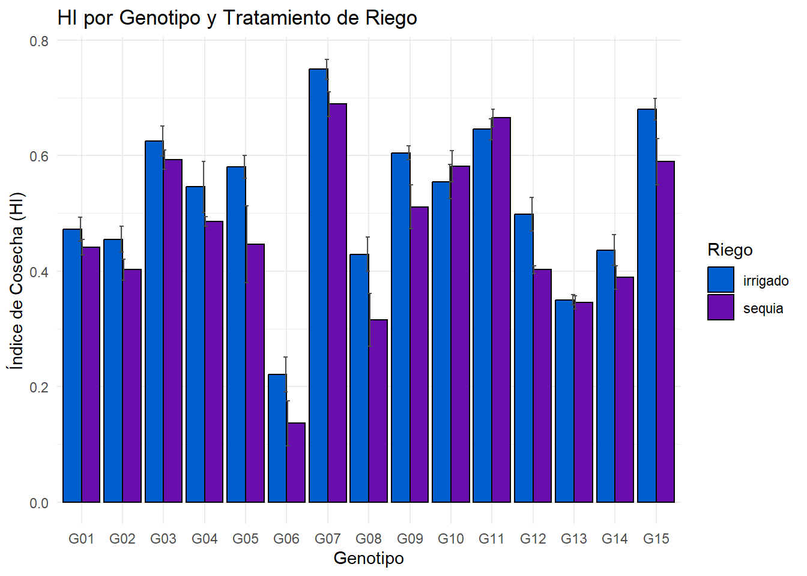
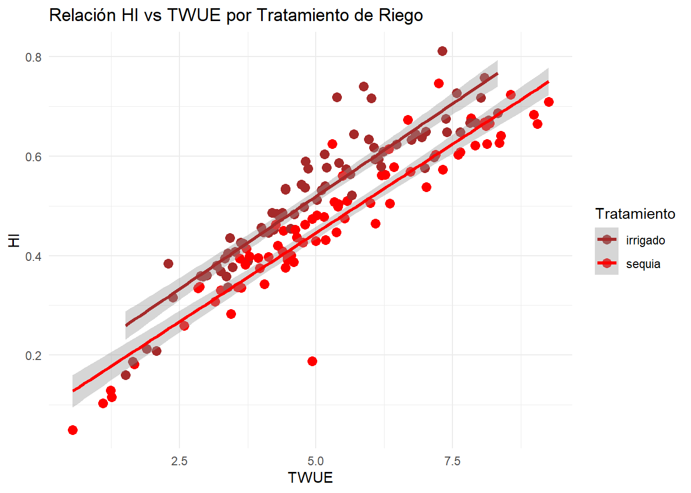

Cargando paquete requerido: mvtnorm
Cargando paquete requerido: survival
Cargando paquete requerido: TH.data
Cargando paquete requerido: MASS
Adjuntando el paquete: 'MASS'
The following object is masked from 'package:dplyr':
select
Adjuntando el paquete: 'TH.data'
The following object is masked from 'package:MASS':
geyser
Base de datos
url <-"https://docs.google.com/spreadsheets/d/15r7ZwcZZHbEgltlF6gSFvCTFA-CFzVBWwg3mFlRyKPs/edit?gid=172957346#gid=172957346"gs <- url %>%as_sheets_id()fb <- gs %>%range_read(sheet ="fb") %>%mutate(across(c(riego:bloque), factor)) #para hacer factor esas columnas
ℹ Suitable tokens found in the cache, associated with these emails:
• '7574265122@untrm.edu.pe'
• 'campostroyesedgar@gmail.com'
Defaulting to the first email.
! Using an auto-discovered, cached token.
To suppress this message, modify your code or options to clearly consent to
the use of a cached token.
See gargle's "Non-interactive auth" vignette for more details:
ggplot(fb, aes(x = geno, y = hi, fill = riego)) +stat_summary(fun = mean, geom ="bar",position =position_dodge(),color ="black") +stat_summary(fun.data = mean_se, geom ="errorbar",position =position_dodge(.10),width =0.2,color ="gray30") +scale_fill_manual(values =c("sequia"="#6A0DAD", # violeta"irrigado"="#005FCE"# azul )) +labs(title ="HI por Genotipo y Tratamiento de Riego",x ="Genotipo",y ="Índice de Cosecha (HI)",fill ="Riego") +theme_minimal()

Gráfico de línea de lfa
# Paleta gris y amarillocolores_riego <-c("sequia"="gray", # gris"irrigado"="yellow"# amarillo)# Gráficoggplot(fb, aes(x = geno, y = lfa, color = riego, group = riego)) +stat_summary(fun = mean, geom ="line", linewidth =1) +stat_summary(fun = mean, geom ="point", size =3) +stat_summary(fun.data = mean_se, geom ="errorbar", width =0.15) +scale_color_manual(values = colores_riego) +labs(title ="LFA por Genotipo y Tratamiento de Riego",x ="Genotipo (geno)",y ="LFA",color ="Riego") +theme_minimal()
Regresión lineal entre hi vs twue
ggplot(fb, aes(x = twue, y = hi, color = riego)) +geom_point(size =3) +geom_smooth(method ="lm", se =TRUE, linewidth =1.2) +scale_color_manual(values =c("sequia"="red", # color para sequía"irrigado"="brown"# color para irrigado )) +labs(title ="Relación HI vs TWUE por Tratamiento de Riego",x ="TWUE",y ="HI",color ="Tratamiento") +theme_minimal()
`geom_smooth()` using formula = 'y ~ x'

BOXPLOT
library(ggplot2)# Paleta de colores para riegocolores_riego <-c("sequia"="#001C55", # Azul Marino"irrigado"="#006DAA"# Azul Claro)ggplot(fb, aes(x = geno, y = rwc_84, fill = riego)) +geom_boxplot(position =position_dodge()) +scale_fill_manual(values = colores_riego) +labs(title ="RWC por Genotipo y Tratamiento de Riego",x ="Genotipo",y ="RWC",fill ="Riego" ) +theme_minimal()